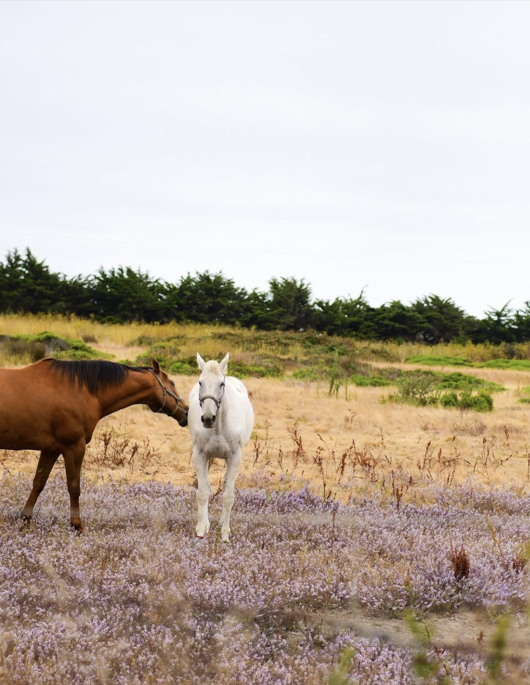

Fish Haven
5 Day Forecast
Preston Weather
In Preston, the summers are warm and mostly clear, the winters are freezing and partly cloudy, and it is dry year round. Over the course of the year, the temperature typically varies from 15°F to 88°F and is rarely below 1°F or above 94°F.
Based on the tourism score, the best time of year to visit Preston for warm-weather activities is from late June to mid August.
The hot season lasts for 3.1 months, from June 11 to September 16, with an average daily high temperature above 76°F. The hottest day of the year is July 27, with an average high of 88°F and low of 53°F.
The cold season lasts for 3.1 months, from November 23 to February 27, with an average daily high temperature below 41°F. The coldest day of the year is January 7, with an average low of 15°F and high of 30°F.
In Preston, the average percentage of the sky covered by clouds experiences significant seasonal variation over the course of the year.
The clearer part of the year in Preston begins around June 5 and lasts for 4.4 months, ending around October 19. On July 26, the clearest day of the year, the sky is clear, mostly clear, or partly cloudy 80% of the time, and overcast or mostly cloudy 20% of the time.
The cloudier part of the year begins around October 19 and lasts for 7.6 months, ending around June 5. On January 17, the cloudiest day of the year, the sky is overcast or mostly cloudy 56% of the time, and clear, mostly clear, or partly cloudy 44% of the time.
A wet day is one with at least 0.04 inches of liquid or liquid-equivalent precipitation. The chance of wet days in Preston varies throughout the year.